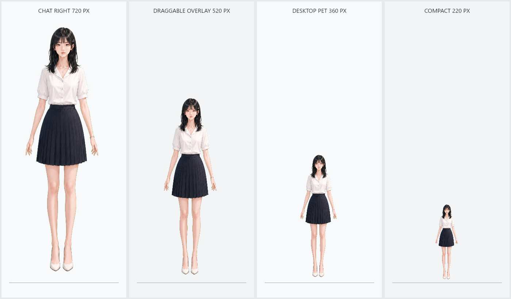

Source alignment
Default-state source placement and target review.

Static local review board for source art, Lite runtime motion, wardrobe preview, GitHub reference scan, and delivery Go/No-Go state.
| Stage | Status | Checks |
|---|---|---|
requirements | GO | concept-baseline-approved: pass athena-default-variant: pass |
source-and-layering | NO_GO | transparent-master: pass layered-baseline: pass parts-count: pass human-layer-review-approved: fail (manual review remains required) hidden-fill-review-approved: fail (manual hidden-fill review remains required) alignment-review-approved: fail (alignment review remains required) |
lite-runtime | GO | lite-runtime-ready: pass runtime-ready: pass layers: pass hot-zones: pass motions: pass visual-qa-ready: pass motion-frames-visible: pass motion-deltas-visible: pass |
appearance-and-wardrobe | PARTIAL | appearance-preview-ready: pass appearance-qa-ready: pass appearance-preset-count: pass wardrobe-contract-ready: pass wardrobe-binding-plan-ready: pass wardrobe-readiness-audit-ready: pass runtime-outfit-preference-ready: pass wardrobe-contract-go: pass wardrobe-binding-plan-go: pass preview-only: pass (current appearance presets are preview-only) true-outfit-swap: fail (true outfit source layers and Cubism bindings are not ready) |
interaction | GO | interaction-policy: pass normal-boundary: pass private-opt-in-boundary: pass persona-reply-delegation: pass private-mode-opt-in: pass semantic-hot-zones: pass private-zone-boundaries: pass |
cubism-handoff | GO | editor-installed: pass handoff-ready: pass readiness-checklist: pass export-gate: pass motion-template-count: pass physics-template: pass headless-export-unavailable: pass (manual Editor export remains required) |
genuine-cubism-export | NO_GO | export-audit-ready: pass runtime-proof-template-ready: pass runtime-proof-not-template: fail (runtime proof is still a template) cubism-export-ready: fail (no genuine .moc3 export yet) cubism-project-ready: fail (no Cubism project committed/exported yet) export-audit-go: fail (export audit status=no_go) |
distribution | NO_GO | public-installer-allowed: fail (public installer is intentionally blocked) store-package-allowed: fail (Store package is intentionally blocked) source-release-excluded: pass rights-review: fail (rights review remains required) live2d-license-review: fail (Live2D license review remains required) |
Default-state source placement and target review.
Full-body readability at chat, overlay, pet, and compact sizes.

Named transparent source parts and layer-slice coverage.

Lite preview motion frames and touch reactions.

Preview-only hair, eye, outfit tint, and hair-clip variants.

These repositories inform structure, runtime behavior, and future input routes. They are not imported character assets.
| Repository | License | Stars | Use | Boundary |
|---|---|---|---|---|
| Live2D/CubismWebSamples | NOASSERTION | 387 | Official package shape, motion group layout, Cubism Web runtime expectations. | Use as structural reference only; do not copy sample character assets into Su Shixia. |
| Live2D/CubismNativeSamples | NOASSERTION | 237 | Cross-runtime confirmation for model, motion, physics, texture, and export package layout. | Native runtime is not Athena desktop renderer; keep implementation in the existing Web/Electron path. |
| guansss/pixi-live2d-display | MIT | 1495 | Pixi display, hit-test, expression, and motion playback patterns for desktop interaction. | Useful runtime reference; still requires Live2D Cubism Core licensing review before distribution. |
| DenchiSoft/VTubeStudio | MIT | 1274 | Triggering, tracking, and parameter-control workflow ideas for model-driven reactions. | Workflow reference only; no VTube Studio app assets or API assumptions in the core package. |
| shinshin86/live2d-add-motion-sample-web-ui | MIT | 121 | Engineering reference for adding motion JSON definitions to an existing model package. | Borrow the workflow concept; authored Su Shixia motion data remains local to Athena. |
| emilianavt/OpenSeeFace | BSD-2-Clause | 2034 | Optional future face and landmark tracking input source for gaze, blink, and expression parameters. | Not needed for the current Lite preview; do not add as a dependency until a camera feature is explicitly scoped. |
| Inochi2D/inochi2d | BSD-2-Clause | 1771 | Useful contrast for open 2D rigging concepts and parameterized puppet design. | Not a Cubism replacement for Athena V2; genuine Cubism export remains the target. |
Current runtime presets remain tint/accessory previews. True wardrobe requires separate source layers, Cubism drawables, and motion QA.
| Outfit | Label | Source Status | Cubism Parameter | Missing For Production |
|---|---|---|---|---|
classic_daily | Signature Daily | current_source_exists_review_required | ParamOutfitClassic | human-polished hidden fill arm-pose garment variants true Cubism opacity binding skirt pleat physics after mesh authoring |
soft_assistant | Soft Assistant | future_source_required | ParamOutfitAssistant | cardigan source layers draped blouse source layers flowing skirt source layers cloth physics and clipping |
home_companion | Home Companion | future_source_required | ParamOutfitHome | knit top source layers relaxed lower garment source layers sitting/rest pose compatibility review sleepy and idle cloth-follow QA |
ivory_ceremony | Ivory Ceremony | future_source_required | ParamOutfitCeremony | gown bodice source layers draped skirt and train source layers high-ponytail hair variant source long-cloth physics and draw-order QA |
Wardrobe audit: no_go; true outfit swap: false; future source outfits missing: 3.
| Area | Severity | Status | Note |
|---|---|---|---|
mouth | medium | provisional | Style is softer than v1 but still requires final illustrator and Cubism deformation review. |
hands | medium | provisional | Neutral and cheek-touch variants exist; anatomy, wrist joins, and hidden fill require rigger review. |
hidden-fill | high | required | Automated torso, blouse, skirt, and limb fills are not a substitute for hand-painted occluded regions. |
alignment | high | required | Target rectangles are production estimates and need user-visible approval before Cubism import. |
display-scale | medium | runtime-rule | A 220 px full-body render cannot carry readable facial emotion; compact placement must use a bust crop or a larger minimum height. |
multi-view | high | not-started | Profile and back source packages remain separate future work. |
hand-arm-layering | high | needs-human-polish | Current front source shows visible arm and hand cut-layer limitations in several poses. Runtime can animate the state, but final public art still needs manual hidden-fill and anatomy cleanup. |
lower-body-layering | medium | needs-human-polish | Shoes, calves, and skirt occlusion are structurally present but still read as provisional automated slices at full-body review scale. |
full-turn | high | not-production-ready | TurnPreview is a front-view 2.5D hint. True side/back turn behavior requires separate reviewed source views or a genuine Cubism rig with authored deformers. |
true-wardrobe-swap | high | not-production-ready | Appearance presets are tint and accessory-visibility previews over the same white-blouse and pleated-skirt silhouette. New clothing silhouettes require new reviewed source layers and Cubism binding. |
source-and-layering:human-layer-review-approvedsource-and-layering:hidden-fill-review-approvedsource-and-layering:alignment-review-approvedappearance-and-wardrobe:true-outfit-swapgenuine-cubism-export:runtime-proof-not-templategenuine-cubism-export:cubism-export-readygenuine-cubism-export:cubism-project-readygenuine-cubism-export:export-audit-godistribution:public-installer-alloweddistribution:store-package-alloweddistribution:rights-reviewdistribution:live2d-license-review| Evidence |
|---|
| Human art review approval for source alignment, hands, lower body, hidden fill, and turn behavior. |
| Separate source layers/drawables for true clothing variants beyond preview tint presets. |
| Wardrobe contract blockers resolved: default outfit human approval and three future public outfit source packages. |
| Cubism Editor project and exported moc3/model3/physics/cdi/texture files. |
| Cubism Web runtime proof replacing the template_unverified proof JSON. |
| Rights review and Live2D license review before public distribution. |
| Current renderer proof | unverified / template_unverified |
|---|---|
| Export audit | no_go |
| Public package | blocked |
| Store package | blocked |